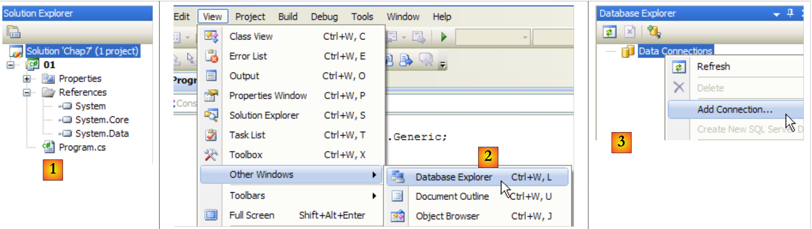
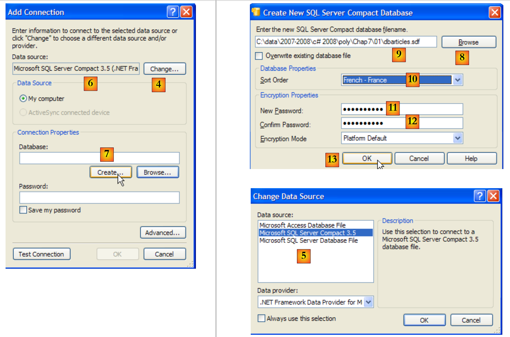
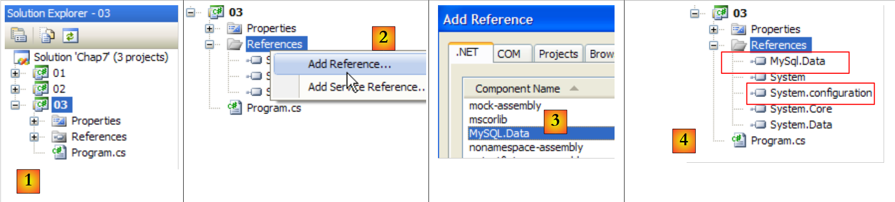
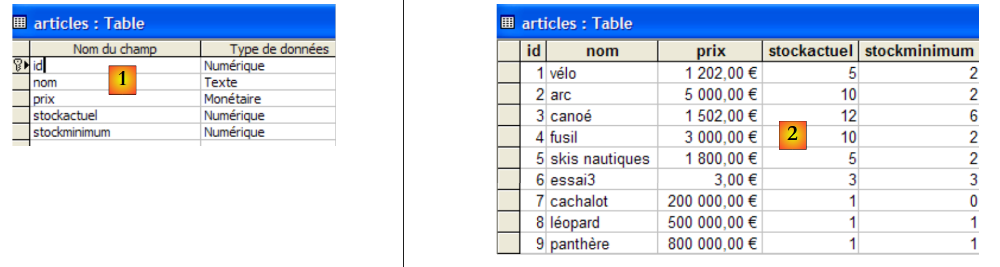
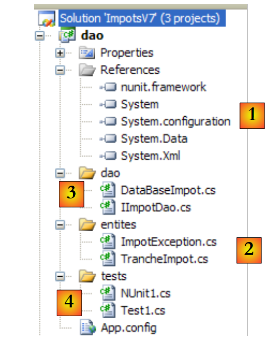
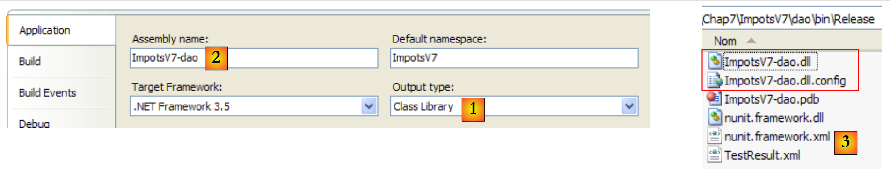
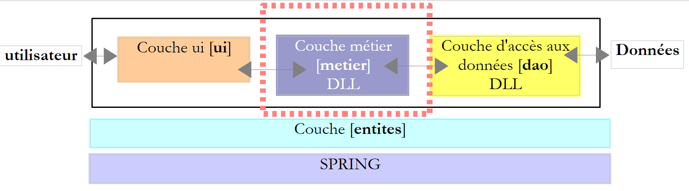
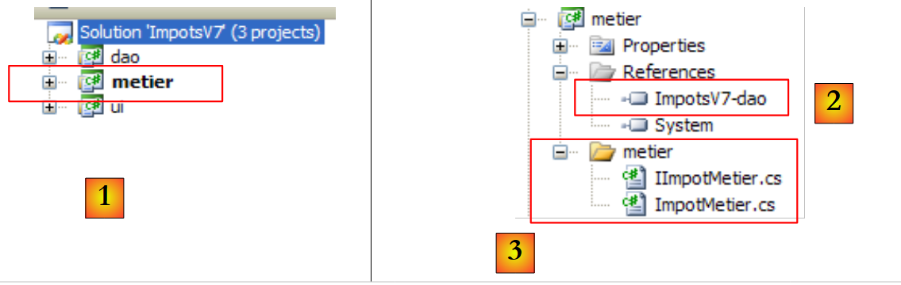

9. 数据库访问
9.1. 连接器 ADO.NET
让我们再次回顾一下在各种场合中使用的分层架构
 |
在已研究的示例中，[DAO]层迄今已利用了两种类型的数据源：
- 硬编码数据
- 来自文本文件的数据
在本章中，我们将研究数据来自数据库的情况。此时，三层架构将演变为多层架构。多层架构有多种类型。我们将通过以下内容来研究其基本概念：
 |
在上图中，[DAO]层[1]通过一个特定于所用SGBD并随其提供的类库与SGBD[3]进行交互。该层实现了被称为ADO（ActiveX数据对象）的标准功能。此类层被称为提供程序（此处指数据库访问提供程序），甚至被称为连接器。 如今大多数关系型数据库都提供了 ADO.NET 连接器，而在 .NET 平台早期并非如此。由于 .NET 连接器并未向 [dao] 层提供标准接口，因此后者的代码中直接包含连接器类名。若更换关系型数据库，不仅需要更换连接器及相关类，还必须修改 [dao] 层。 这种设计既高效——因为针对特定 SGBD 编写的 .NET 连接器深谙其最佳使用方式；又显僵化——因为更换 SGBD 意味着必须修改 [DAO] 层。但需对这一缺点进行客观评估：企业通常不会频繁更换 SGBD。我们稍后将看到，自 .NET 2.0 版本起，已推出通用连接器，它在不牺牲性能的前提下提供了灵活性。
9.2. 使用数据源的两种方式
.NET 平台允许您通过两种不同方式利用数据源：
- 连接模式
- 脱机模式
在连接模式下，应用程序
- 会与数据源建立连接
- 与读写数据源进行交互
- 关闭连接
在脱机模式下，应用程序
- 打开与数据源的连接
- 获取源数据全部或部分的内存副本
- 关闭连接
- 对读写数据的内存副本进行操作
- 任务完成后，建立连接，将修改后的数据发送至数据源以供更新，然后关闭连接
本文仅研究连接模式。
9.3. 数据库操作的基本概念
我们将通过 SQL Server Compact 3.5 数据库演示数据库使用的主要概念。该数据库管理系统随 Visual Studio Express 一起提供。它是一个轻量级的数据库管理系统，每次只能管理一个用户。不过，它足以用于介绍数据库编程。日后，我们将介绍其他数据库管理系统。
将采用以下架构：
 |
一个控制台应用程序 [1] 将通过该数据库管理系统 [2] 的 Ado.Net 连接器来操作 SqlServer Compact 数据库 [3,4]。
9.3.1. 访问 示例数据库
我们将直接在 Visual Studio Express 中构建该数据库。为此，我们需要创建一个新的控制台项目。
 |
- [1]：项目
- [2]：打开“数据库资源管理器”视图
- [3]：创建新连接
 |
- [4]：选择数据库管理系统类型
- [5,6]：选择数据库管理系统 SQL Server Compact
- [7]: 创建数据库
- [8]：SQL Server Compact 数据库封装在一个 .sdf 文件中。我们指定创建位置，此处为 C# 项目文件夹。
- [9]：新数据库已命名为 [dbarticles.sdf]
- [10]：已选择法语。这会影响排序操作。
- [11,12]：数据库可设置密码保护。此处为“dbarticles”。
- [13]：确认信息页面。数据库现已物理创建完成：
 |
- [14]：刚刚创建的数据库名称
- [15]：勾选“保存我的密码”选项，这样就无需每次重新输入
- [16]：检查连接
- [17]：一切正常
- [18]：验证信息页面
- [19]：连接已显示在数据库资源管理器中
- [20]：目前数据库中尚无表。让我们创建一个。一篇文章将包含以下字段：
- id：唯一标识符——主键
- name：商品名称——唯一
- price：商品价格
- 当前库存：当前库存量
- 库存下限：指当库存低于该水平时，必须对该商品进行补货
 |
- [21]：[id] 字段为整数类型，是该表的主键 [22]。
- [23]：此主键为 Identity 类型。这一概念特指 SQL Server 数据库管理系统，表示主键将由数据库管理系统自身生成。在此，主键将是一个从 1 开始、每次生成新键时递增 1 的整数。
 |
 |
- [28]：请求查看表内容
- [29]: 当前为空
- [30]：此处将填入部分数据。每输入一行，该行即被验证。[id]字段无需手动输入：它会在行被验证时自动生成。
现在我们需要配置项目，以便将当前位于项目根目录下的该数据库自动复制到项目执行文件夹中：
 |
- [1]：请求查看所有文件
- [2]: 显示基础数据库 [dbarticles.sdf]
- [3]: 将其添加到项目中
 |
- [4]：将数据源添加到项目中的操作会启动一个向导，但此处我们不需要它 [5]。
- [6]：该数据库现已成为项目的一部分。我们返回正常模式 [7]。
- [8]：包含数据库的项目
- [9]：在数据库属性中，我们可以看到[10]该数据库将被自动复制到项目运行文件夹中。我们即将编写的程序将在此处查找该数据库。
既然已有可用数据库，我们便可加以利用。首先，让我们了解 SQL。
9.3.2. SQL语言的四个基本命令
SQL（结构化查询语言）是一种用于查询和更新数据库的部分标准化语言。所有关系型数据库管理系统（RDBMS）都遵循SQL的标准化部分，但会向该语言添加专有扩展，以利用RDBMS的某些特性。我们已经看到了两个例子：主键的自动生成以及表列允许的类型通常取决于RDBMS。
我们介绍的四条基本SQL语言命令是标准化的，并被所有SGBD所接受：
用于检索数据库中数据的查询语句。仅第一行的关键字是必填的，其余均为可选。此处未显示的其他关键字 。
| |
向表中插入一行。(col1, col2, ...) 指定要使用值 (val1, val2, ...) 初始化的行列。 | |
更新表并检查条件（如果没有 where 子句，则更新所有行）。对于这些行，col1 将被赋值为 val1 | |
删除所有表检查条件 |
我们将编写一个控制台应用程序，向之前创建的 [dbarticles] 数据库发送 SQL 命令。以下是一个 的执行示例。欢迎读者理解所发送的 SQL 命令及其结果。
- 第 1 行：连接字符串：包含连接数据库所需的所有参数。
- 第 3 行：查询 [articles] 表的内容
- 第 16 行：插入一行。请注意，此操作中未初始化 id，因为该字段的值将由数据库管理系统 (SGBD) 生成。
- 第 19 行：检查。第 28 行，该行已添加。
- 第 30 行：将刚添加的商品价格提高 10%。
- 第 33 行：检查
- 第 42 行：价格已上涨
- 第 44 行：删除之前添加的商品
- 第47行：已验证
- 第53-55行：该商品已不存在。
9.3.3. 连接模式下的基本 ADO.NET 接口
让我们回到通过 ADO.NET 连接器使用数据库的应用程序示意图：
 |
在连接模式下，：
- 打开与数据源的连接
- 对数据源进行读写操作
- 关闭连接
以下三个 ADO.NET 接口主要涉及这些操作：
- IDbConnection，该接口封装了连接的属性与方法。
- IDbCommand，封装了正在执行的 SQL 命令的属性和方法。
- IDataReader，封装了 SQL SELECT 语句结果的属性和方法。
用于管理数据库连接。该接口的方法 M 和属性 P 将如下所示：
名称 | 类型 | 角色 |
P | 连接到基站的连接字符串。它指定了与特定基站建立连接所需的所有参数。 | |
M | 打开与由 ConnectionString 定义的数据源的连接 | |
M | 关闭连接 | |
M | 开始事务。 | |
P | 连接状态：ConnectionState.Closed、ConnectionState.Open、ConnectionState.Connecting、ConnectionState.Executing、ConnectionState.Fetching、ConnectionState.Broken |
如果 Connection 是一个实现了 IDbConnection 接口的类，则可以按以下方式打开连接：
用于执行 SQL 命令或存储过程。该接口的方法 M 和属性 P 如下所示：
名称 | 类型 | 角色 |
P | 表示要执行的内容 - 其值取自一个枚举： - CommandType.Text：执行在 CommandText 中定义的 SQL 命令。这是默认值。 - CommandType.StoredProcedure：执行存储在 | |
P | - 若 CommandType= CommandType.Text，则为待执行的 SQL 命令文本 - 当 CommandType= CommandType.StoredProcedure 时，要执行的存储过程的名称 | |
P | 用于执行 SQL 命令的 IDbConnection 连接 | |
P | 用于执行 SQL 命令的事务 IDbTransaction | |
P | 带参数的 SQL 语句的参数列表。语句 update articles set price=price*1.1 where id=@id 包含 @id 参数。 | |
M | 用于执行 SQL SELECT 语句。返回结果是一个 IDataReader 对象，该对象表示 SELECT 语句的执行结果。 | |
M | 用于执行 SQL Update、Insert、Delete 语句。该方法返回受操作影响的行数（已更新、已插入、已删除）。 | |
M | 用于执行 SQL 语句 Select，返回单个结果，例如：select count(*) from articles。 | |
M | 用于创建 SQL 命令 IDbParameter 的参数。 | |
M | 在参数化查询使用不同参数多次执行时，可优化其执行效率。 |
如果 Command 是实现 IDbCommand 的类，则不带事务的 SQL 命令执行将采用以下形式：
用于封装SQL SELECT语句的结果。一个IDataReader对象表示一个包含行和列的表，这些行和列将按顺序处理：先处理第一行，然后是第二行，依此类推。该接口的方法M和属性P如下所示：
名称 | 类型 | 作用 |
P | 表中的列数IDataReader | |
M | GetName(i) 返回 IDataReader 表中第 i 列的名称。 | |
P | Item[i] 代表 IDataReader 表中当前行的第 i 列。 | |
M | 移动到 IDataReader 表中的下一行。Render如果读取成功则返回布尔值 True，否则返回 False。 | |
M移动到 IDataReader 表中的下一行。Render如果读取成功，则返回布尔值 True | 关闭表 IDataReader。 | |
M | GetBoolean(i)：返回当前表行 IDataReader 中第 i 列的布尔值。其他类似的方法包括：GetDateTime、GetDecimal、GetDouble、GetFloat、GetInt16、GetInt32、GetInt64、GetString。 | |
M | Getvalue(i)：将当前表行 IDataReader 中第 i 列的值作为类型对象返回。 | |
M | 如果 IDataReader 当前行中的第 i 列没有值（由 SQL NULL 表示），则 IsDBNull(i) 返回 True。 |
IDataReader 对象的调用通常如下所示：
9.3.4. 错误处理
让我们回顾一下数据库应用程序的架构：
 |
在数据库操作过程中，[dao]层可能会遇到大量错误。这些错误将由ADO.NET连接器抛出为异常。[dao]层的代码必须处理这些异常。任何数据库操作都必须采用try/catch/finally模式，以便拦截并处理任何异常，并释放需要释放的资源。例如，上面用于处理Select查询结果的代码将变为如下所示：
无论发生什么情况，IDataReader 和 IDbConnection 对象都必须关闭。这就是为什么将此关闭操作包含在 finally 子句中的原因。
关闭连接和 IDataReader 对象可以通过 using 语句实现自动化：
- 第 3 行中的 using 子句确保了 using(...){...} 块中打开的连接将在块外部被关闭，无论您是如何退出该块的：无论是正常退出还是因异常触发。这省去了 finally 语句，但其价值并不在于这种微小的节省。 使用 `using` 语句会阻止开发者自行关闭连接。否则，忘记关闭连接可能不会被察觉，并会在每次数据库管理系统（SGBD）达到其支持的最大打开连接数时，以看似随机的方式导致应用程序“崩溃”。
- 第 11 行：以相同方式关闭 IDataReader 对象。
9.3.5. 示例项目配置
最终项目将如下所示：
 |
- [1]：该项目将包含一个配置文件 [App.config]
- [2]：该项目使用两个默认未引用的 DLL 类，因此必须将其添加到项目引用中：
- [System.Configuration] 用于使用配置文件 [App.config]
- [System.Data.SqlServerCe] 用于操作 Sql Server Compact 数据库
- [3, 4]: 提醒您如何向项目添加引用。
- [5, 6]：回顾如何将 [App.config] 文件添加到项目中。
配置文件 [App.config] 将如下所示：
<?xml version="1.0" encoding="utf-8" ?>
<configuration>
<connectionStrings>
<add name="dbSqlServerCe" connectionString="Data Source=|DataDirectory|\dbarticles.sdf;Password=dbarticles;" />
</connectionStrings>
</configuration>
- 第 3-5 行：<connectionStrings> 标签定义了数据库连接字符串。连接字符串的格式为 "参数1=值1;参数2=值2;..."。它定义了与特定数据库建立连接所需的所有参数。这些连接字符串因不同的关系型数据库管理系统 (RDBMS) 而异。[http://www.connectionstrings.com/] 提供了主要 RDBMS 的连接字符串格式。
- 第 4 行：定义了一个具体的连接字符串，此处针对我们之前创建的 SQL Server Compact 数据库 dbarticles.sdf：
- name = 连接字符串的名称。C# 程序正是通过此名称来获取连接字符串
- connectionString：基础 SQL Server Compact 的连接字符串
- DataSource：指定基础路径。语法 |DataDirectory| 表示项目执行文件夹。
- Password：基础密码。若未设置密码，则此参数省略。
用于检索上述连接字符串的 C# 代码如下：
string connectionString = ConfigurationManager.ConnectionStrings["dbSqlServerCe"].ConnectionString;
- ConfigurationManager 是 DLL [System.Configuration] 中的类，用于操作 [App.config] 文件。
- ConnectionStrings["nom"].ConnectionString：指代 [App.config] 文件中 <add name="name" connectionString="..."> 部分下的 <connectionStrings> 标签
项目现已配置完成。接下来我们将查看 [Program.cs] 类，此前我们已见过该类的示例。
9.3.6. 示例程序
[Program.cs] 程序内容如下：
using System;
using System.Collections.Generic;
using System.Data.SqlServerCe;
using System.Text;
using System.Text.RegularExpressions;
using System.Configuration;
namespace Chap7 {
class SqlCommands {
static void Main(string[] args) {
// console application - executes SQL requests typed from the keyboard
// on a database whose connection string is obtained from a configuration file
// use of configuration file [App.config]
string connectionString = null;
try {
connectionString = ConfigurationManager.ConnectionStrings["dbSqlServerCe"].ConnectionString;
} catch (Exception e) {
Console.WriteLine("Erreur de configuration : {0}", e.Message);
return;
}
// display connection string
Console.WriteLine("Chaîne de connexion à la base : [{0}]\n", connectionString);
// build a dictionary of accepted sql commands
string[] commandesSQL = new string[] { "select", "insert", "update", "delete" };
Dictionary<string, bool> dicoCommandes = new Dictionary<string, bool>();
for (int i = 0; i < commandesSQL.Length; i++) {
dicoCommandes.Add(commandesSQL[i], true);
}
// read-execute SQL commands typed on the keyboard
string requête = nu ll; // query text SQL
string[] cham ps; // query fields
Regex modèle = new Regex(@"\s+ "); // sequence of spaces
// input-execution loop for SQL commands typed on keyboard
while (true) {
// request for query
Console.Write("\nRequête SQL (rien pour arrêter) : ");
requête = Console.ReadLine().Trim().ToLower();
// finished?
if (requête == "")
break;
// the query is broken down into fields
champs = modèle.Split(requête);
// valid request?
if (champs.Length == 0 || ! dicoCommandes.ContainsKey(champs[0])) {
// error msg
Console.WriteLine("Requête invalide. Utilisez select, insert, update, delete ou rien pour arrêter");
// following request
continue;
}
// query execution
if (champs[0] == "select") {
ExecuteSelect(connectionString, requête);
} else
ExecuteUpdate(connectionString, requête);
}
}
// execute an update request
static void ExecuteUpdate(string connectionString, string requête) {
...
}
// executing a Select query
static void ExecuteSelect(string connectionString, string requête) {
....
}
}
}
- 第 1-6 行：应用程序中使用的命名空间。管理 SQL Server Compact 数据库需要第 3 行中的命名空间 [System.Data.SqlServerCe]。这是对数据库管理系统（DBMS）专有命名空间的依赖。这意味着如果更换了数据库管理系统，则必须修改程序。
- 第 18 行：从文件 [App.config] 中读取数据库连接字符串，并在第 25 行显示。该字符串将用于与数据库建立连接。
- 第 28-32 行：一个字典，用于存储四种授权的 SQL 语句名称：select、insert、update、delete。
- 第 40-62 行：用于处理键盘输入的 SQL 命令并将其执行在数据库上的循环
- 第 48 行：将键盘输入的行拆分为字段，以确定第一个术语，该术语必须是：select、insert、update、delete
- 第50-55行：若查询无效，则显示错误信息并转至下一条查询。
- 第 57-61 行：执行输入的 SQL 命令。根据命令类型（select、insert、update 或 delete）的不同，执行方式也不同。在第一种情况下，命令从数据库中检索数据而不进行修改；在第二种情况下，命令更新数据库而不检索数据。在两种情况下，执行都委托给一个需要两个参数的方法：
- 用于连接数据库的连接字符串
- 将在该连接上执行的 SQL 命令
9.3.7. 执行 SELECT 查询
执行 SQL 命令需要以下步骤：
- 数据库连接
- 将 SQL 命令发送至服务器
- 处理 SQL 命令结果
- 关闭连接
步骤 2 和 3 会反复执行，只有在不再使用数据库时才会关闭连接。打开的连接是 SGBD 的有限资源，必须加以节约。这就是为什么我们总是尽量限制打开连接的存活时间。在此示例中，每次执行 SQL 命令后都会关闭连接。 为下一个 SQL 命令会打开新的连接。打开和关闭连接会消耗资源。为了降低这种开销，某些 SGBD 提供了连接池的概念：在应用程序初始化时，会打开 N 个连接并将其分配到池中。这些连接将保持打开状态直至应用程序结束。当应用程序打开连接时，它会从池中获取已打开的 N 个连接之一；当它关闭连接时，只需将其归还给池即可。 该机制的优势在于对开发者完全透明：程序无需修改即可使用连接池。连接池的配置取决于具体的 SGBD。
首先，我们来看 SQL 语句 Select 的执行过程。示例程序中的 ExecuteSelect 方法如下：
// execute a Select query
static void ExecuteSelect(string connectionString, string requête) {
// handle any exceptions
try {
using (SqlCeConnection connexion = new SqlCeConnection(connectionString)) {
// opening connection
connexion.Open();
// executes sqlCommand with select query
SqlCeCommand sqlCommand = new SqlCeCommand(requête, connexion);
SqlCeDataReader reader= sqlCommand.ExecuteReader();
// displaying results
AfficheReader(reader);
}
} catch (Exception ex) {
// error msg
Console.WriteLine("Erreur d'accès à la base de données (" + ex.Message + ")");
}
}
// reader display
static void AfficheReader(IDataReader reader) {
...
}
- 第 2 行：该方法接收两个参数：
- 用于连接数据库的连接字符串 [connectionString]
- 要在该连接上执行的 SQL SELECT 语句 [request]
- 第4行：任何数据库操作都可能引发异常，您可能需要进行处理。这一点在此处尤为重要，因为用户提供的SQL命令可能存在语法错误。我们需要能够向用户反馈错误。因此，所有代码都置于try/catch块中。
- 第 5 行：此处包含以下内容：
- 使用连接字符串 [connectionString] 初始化数据库连接。此时连接尚未打开，将在第 7 行打开。
- using (Resource) {...} 语句是一种语法机制，可确保在 using 语句块结束时释放 Resource 资源（此处指连接）。
- 该连接采用专有类型：SqlCeConnection，专用于 SQL Server Compact 数据库管理系统。
- 第 7 行：连接被打开。此时会使用连接字符串中的参数。
- 第 9 行：通过 SqlCeCommand 对象发出 SQL 语句。第 9 行使用两项信息初始化该对象：要使用的连接以及要通过该连接发送的 SQL 命令。SqlCeCommand 对象可用于执行 SELECT、UPDATE、INSERT 或 DELETE 语句。其属性和方法已在第 9.3.3 节中介绍。
- 第 10 行：通过 SqlCeCommand 对象的 ExecuteReader 方法执行 SELECT 语句，该方法会生成一个 IDataReader 对象，其方法和属性已在第 9.3.3 节中介绍。
- 第 12 行：结果的显示交由 AfficheReader 负责，接下来：
// reader display
static void AfficheReader(IDataReader reader) {
using (reader) {
// exploitation of results
// -- columns
StringBuilder ligne = new StringBuilder();
int i;
for (i = 0; i < reader.FieldCount - 1; i++) {
ligne.Append(reader.GetName(i)).Append(",");
}
ligne.Append(reader.GetName(i));
Console.WriteLine("\n{0}\n{1}\n{2}\n", "".PadLeft(ligne.Length, '-'), ligne, "".PadLeft(ligne.Length, '-'));
// -- data
while (reader.Read()) {
// current line operation
ligne = new StringBuilder();
for (i = 0; i < reader.FieldCount; i++) {
ligne.Append(reader[i].ToString()).Append(" ");
}
Console.WriteLine(ligne);
}
}
}
- 第 2 行：该方法接收一个 IDataReader 对象。请注意，这里是接口，而不是具体的类。
- 第 3 行：使用 is 子句可自动管理 IDataReader 的关闭。
- 第 8-10 行：Select 语句结果表的列名。这些列对应于请求中的 `SELECT col1, col2, ... FROM table ...` 语句中的 `coli`。
- 第 14-21 行：遍历结果表，并显示每行数据。
- 第 18 行：由于我们不知道被查询的表，因此无法确定结果中第 i 列的类型。语法 reader.GetXXX(i)，其中 XXX 表示第 i 列的类型，因为该类型未知。 随后，我们使用语法 reader.Item[i].ToString() 来获取第 i 列的字符串表示形式。语法 reader.Item[i].ToString() 可以简写为 reader[i].ToString()。
9.3.8. 执行更新操作：INSERT、UPDATE、DELETE
ExecuteUpdate 方法的代码如下：
// execute an update request
static void ExecuteUpdate(string connectionString, string requête) {
// handle any exceptions
try {
using (SqlCeConnection connexion = new SqlCeConnection(connectionString)) {
// opening connection
connexion.Open();
// executes sqlCommand with update request
SqlCeCommand sqlCommand = new SqlCeCommand(requête, connexion);
int nbLignes = sqlCommand.ExecuteNonQuery();
// result display
Console.WriteLine("Il y a eu {0} ligne(s) modifiée(s)", nbLignes);
}
} catch (Exception ex) {
// error msg
Console.WriteLine("Erreur d'accès à la base de données (" + ex.Message + ")");
}
}
我们曾提到，通过 SqlCeCommand 对象执行 SELECT 查询命令与执行 UPDATE、INSERT、DELETE 语句并无二致：SELECT 使用 ExecuteReader，UPDATE、INSERT、DELETE 使用 ExecuteNonQuery。上文代码中我们仅对后者进行了注释：
- 第 10 行：通过 SqlCeCommand 对象的 ExecuteNonQuery 方法执行 Update、Insert、Delete 语句。若执行成功，该方法将返回更新（update）、插入（insert）或删除（delete）的行数。
- 第 12 行：将该行数显示在屏幕上
建议读者参阅第 9.3.2 节中的示例，了解如何执行此代码。
9.4. 其他 ADO.NET 连接器
我们所研究的代码是专有的：它依赖于 SGBD SQL Server Compact 的 [System.Data.SqlServerCe]。现在，我们将使用不同的 .NET 连接器构建相同的程序，并观察会有哪些变化。
9.4.1. 连接器 SQL Server 2005
将采用以下架构：
 |
SQL Server 2005 的安装说明详见附录第 1.1 节。
我们在与之前相同的解决方案中创建第二个项目，然后创建 SQL Server 2005 数据库。在执行以下操作之前，必须启动 SQL Server 2005 数据库管理系统：
 |
- [1]：在当前解决方案中创建一个新项目，并将其设为当前项目。
- [2]：创建一个新的连接
- [3]：选择连接类型
 |
- [4]：选择数据库管理系统 SQL Server
- [5]: 上一步选择的结果
- [6]: 使用 [浏览] 按钮指定创建 SQL Server 2005 数据库的位置。该数据库封装在一个 .mdf 文件中。
- [7]: 选择新项目的根目录并调用基础文件 [dbarticles.mdf]。
- [8]: 使用 Windows 身份验证。
- [9]: 验证信息页面
 |
- [11]：SQL Server 数据库
- [12]：创建表。这将与之前构建的 SQL Server Compact 数据库完全相同。
- [13]: [id] 字段
- [14]: [id] 字段的类型为 Identity。
- [15,16]：字段 [id] 是主键
 |
- [17]：其他表字段
- [18]：保存时（Ctrl+S），请将该表命名为 [articles]。
我们还需要向表中插入数据：
 |  |
我们将数据库包含在：
 |
该项目的引用如下：
 |
配置文件 [App.config] 如下：
<?xml version="1.0" encoding="utf-8" ?>
<configuration>
<connectionStrings>
<add name="connectString1" connectionString="Data Source=.\SQLEXPRESS;AttachDbFilename=|DataDirectory|\dbarticles.mdf;Integrated Security=True;Connect Timeout=30;User Instance=True;" />
<add name="connectString2" connectionString="Data Source=.\SQLEXPRESS;AttachDbFilename=|DataDirectory|\dbarticles.mdf;Uid=sa;Pwd=msde;Connect Timeout=30;" />
</connectionStrings>
</configuration>
- 第 4 行：使用 Windows 身份验证的数据库连接字符串 [dbarticles.mdf]
- 第 5 行：使用 SQL Server 身份验证的数据库连接字符串 [dbarticles.mdf]。[sa,msde] 是第 1.1 段中定义的 SQL Server 管理员的 (登录名,密码) 对。
[Program.cs] 程序的演变如下：
using System.Data.SqlClient;
...
namespace Chap7 {
class SqlCommands {
static void Main(string[] args) {
...
// use of configuration file [App.config]
string connectionString = null;
try {
connectionString = ConfigurationManager.ConnectionStrings["connectString2"].ConnectionString;
} catch (Exception e) {
...
}
...
// read-execute SQL commands typed on the keyboard
...
}
// execute an update request
static void ExecuteUpdate(string connectionString, string requête) {
// handle any exceptions
try {
using (SqlConnection connexion = new SqlConnection(connectionString)) {
// opening connection
connexion.Open();
// executes sqlCommand with update request
SqlCommand sqlCommand = new SqlCommand(requête, connexion);
int nbLignes = sqlCommand.ExecuteNonQuery();
// result display
Console.WriteLine("Il y a eu {0} ligne(s) modifiée(s)", nbLignes);
}
} catch (Exception ex) {
....
}
}
// execute a Select query
static void ExecuteSelect(string connectionString, string requête) {
// handle any exceptions
try {
using (SqlConnection connexion = new SqlConnection(connectionString)) {
// opening connection
connexion.Open();
// executes sqlCommand with select query
SqlCommand sqlCommand = new SqlCommand(requête, connexion);
SqlDataReader reader = sqlCommand.ExecuteReader();
// exploitation of results
...
}
} catch (Exception ex) {
...
}
}
}
}
- 第 1 行：命名空间 [System.Data.SqlClient] 包含用于管理 SQL Server 2005 数据库的类
- 第 24 行：连接类型为 SQLConnection
- 第 28 行：封装 SQL 命令的对象类型为 SQLCommand
- 第 47 行：封装 SQL Select 语句结果的对象类型为 SQLDataReader
除类名外，该代码与用于 SGBD SQL Server Compact 的代码完全相同。要执行它，您可以使用（第 11 行）在 [App.config] 中定义的两个连接字符串中的任意一个。
9.4.2. 连接器 MySQL5
所采用的架构如下：
 |
MySQL5 的安装说明详见附录第 1.2 节“连接器”以及第 1.2.5 节“Ado.Net 连接器”。
我们在与之前相同的解决方案中创建第三个项目，并添加其所需的引用：
 |
- [1]：新项目
- [2]：向其添加引用
- [3]：MySQL 5 的 Ado.Net 连接器 DLL [MySQL.Data]，以及 [System.Configuration] [4]。
现在我们创建数据库 [dbarticles] 及其表 [articles]。MySQL5 数据库管理系统必须已启动。此外，我们还需启动 [Query Browser] 客户端（参见第 1.2.3 节）。
 |
- [1]：在 [Query Browser] 中，右键单击 [Schemata] 区域 [2] 以创建 [3] 一个新模式（即数据库的术语）。
- [4]：该数据库将命名为 [dbarticles]。在 [5] 中，我们可以看到它。目前，它还没有表。我们将执行以下 SQL 脚本：
- 第 1 行：将 [dbarticles] 数据库设为当前数据库。后续的 SQL 命令将在该数据库上执行。
- 第 4-10 行：定义表 [ARTICLES]。请注意，SQL 属于 MySQL。列类型和主键的自动生成（AUTO_INCREMENT 属性）与 SGBD SQL Server Compact 和 Express 中的情况不同。
- 第 12-14 行：插入三行
- 第 16-21 行：为列添加完整性约束。
此脚本在 [MySQL Query Browser] 中执行：
 |
- 在 [MySQL 查询浏览器] [6] 中，我们加载脚本 [7]。您可以在 [8] 中看到它。在 [9] 中，脚本被执行。
 |
- 在 [10] 中，表 [articles] 已创建。双击该表。这将弹出窗口 [11]，其中包含查询 [12]，准备通过 [13] 执行。在 [14] 中，显示了执行结果。我们得到了预期的三行数据。请注意，字段 [ID] 中的值是自动生成的（字段属性为 AUTO_INCREMENT）。
现在数据库已准备就绪，我们可以回到 Visual Studio 继续开发应用程序。
 |
在 [1] 中，是程序 [Program.cs] 和配置文件 [App.config]。后者的内容如下：
<?xml version="1.0" encoding="utf-8" ?>
<configuration>
<connectionStrings>
<add name="dbArticlesMySql5" connectionString="Server=localhost;Database=dbarticles;Uid=root;Pwd=root;" />
</connectionStrings>
</configuration>
第 4 行，连接字符串的各部分含义如下：
- Server：运行MySQL数据库管理系统的机器名称，此处为localhost，即程序运行所在的机器。
- 数据库：所管理的数据库名称，此处为 dbarticles
- Uid：用户名，此处为 root
- 密码：其密码，此处为 root。这两项信息指代第 1.2 节中创建的管理员。
[Program.cs]程序与前几个版本完全相同，仅以下细节有所不同：
MySql.Data.MySqlClient | |
MySqlConnection | |
MySqlCommand | |
MySqlDataReader |
该程序使用 [App.config] 文件中名为 dbArticlesMySql5 的连接字符串。运行后得到以下结果：
9.4.3. ODBC 连接器
将采用以下架构：
 |
ODBC连接器的优势在于，它们为使用它们的应用程序提供了一个标准接口。因此，通过单一代码，新应用程序将能够与任何支持ODBC、CA或SGBD连接器的关系型数据库管理系统（RDBMS）进行通信。 ODBC连接器的性能虽不及能够充分利用特定关系型数据库所有功能的“专有”连接器，但其应用灵活性极高：无需修改代码即可更换关系型数据库。
我们将通过一个示例来演示：该应用程序会根据您提供的连接字符串，使用 MySQL5 数据库或 SQL Server Express 数据库。下文中，我们假设：
- SQL Server Express 和 MySQL5 数据库已启动
- 计算机上已安装 MySQL5 的 ODBC 驱动程序（参见第 1.2.6 节）。默认驱动程序为 SQL Server 2005。
- 所使用的数据库为：MySQL5 数据库对应第 9.4.2 节所述的数据库，SQL Server Express 数据库对应第 9.4.1 节所述的数据库。
新的 Visual Studio 项目如下：
 |
上文已将第 9.4.1 节中创建的 SQL Server [dbarticles.mdf] 数据库复制到项目文件中。
配置文件 [App.config] 如下所示：
<?xml version="1.0" encoding="utf-8" ?>
<configuration>
<connectionStrings>
<add name="dbArticlesOdbcMySql5" connectionString="Driver={MySQL ODBC 3.51 Driver};Server=localhost;Database=dbarticles; User=root;Password=root;" />
<add name="dbArticlesOdbcSqlServer2005" connectionString="Driver={SQL Native Client};Server=.\SQLExpress;AttachDbFilename=|DataDirectory|\dbarticles.mdf;Uid=sa;Pwd=msde;" />
</connectionStrings>
</configuration>
- 第 4 行：源连接字符串 ODBC MySQL5。这是之前学过的字符串，其中新增了一个参数 Driver，用于定义要使用的 ODBC 驱动程序。
- 第 5 行：源连接字符串 ODBC SQL Server Express。这是之前示例中已使用过的字符串，其中添加了 Driver 参数。
[Program.cs] 程序与之前的版本完全相同，仅以下细节有所不同：
System.Data.Odbc | |
OdbcConnection | |
OdbcCommand | |
ODBCDataReader |
该程序使用文件 [App.config] 中定义的两个连接字符串之一。运行结果如下：
使用连接字符串 [dbArticlesOdbcSqlServer2005] 时：
使用连接字符串 [dbArticlesOdbcMySql5]：
9.4.4. OLE DB 连接器
将采用以下架构：
 |
与 ODBC 连接器类似，OLE DB 连接器（对象链接与嵌入数据库）驱动程序也提供了面向使用它们的应用程序的标准接口。ODBC 驱动程序用于访问数据库。而 OLE DB 的数据源驱动程序则更为多样化：包括数据库、消息系统、目录等。只要编辑器决定，任何数据源都可以成为 OLE DB 驱动程序的对象。这为访问各种数据提供了标准化的途径。
我们将通过一个示例来演示：应用程序会根据您提供的连接字符串，使用 ACCESS 或 SQL Server Express 数据库。在下文中，我们假设 SQL Server Express 数据库管理系统已启动，且所使用的数据库与前一个示例中的相同。
新的 Visual Studio 项目如下：
 |
- 在 [1] 中：OLE DB 连接器所需的命名空间 [System.Data.OleDb] 包含在上方的引用 [System.Data] 中。SQL Server 数据库 [dbarticles.mdf] 已从上一个项目中复制而来。基础数据库 [dbarticles.mdb] 是使用 Access 创建的。
- 在 [2] 中：与 SQL Server 数据库类似，Access 数据库也设置了 [Copy to Output Directory=Copy Always] 属性，因此它会自动复制到项目执行文件夹中。
ACCESS [dbarticles.mdb] 数据库内容如下：
 |
[1] 显示了 [articles] 表的结构，[2] 显示了其内容。
配置文件 [App.config] 如下所示：
<?xml version="1.0" encoding="utf-8" ?>
<configuration>
<connectionStrings>
<add name="dbArticlesOleDbAccess" connectionString="Provider=Microsoft.Jet.OLEDB.4.0;Data Source=|DataDirectory|\dbarticles.mdb;"/>
<add name="dbArticlesOleDbSqlServer2005" connectionString="Provider=SQLNCLI;Server=.\SQLEXPRESS;AttachDbFilename=|DataDirectory|\dbarticles.mdf;Uid=sa;Pwd=msde;" />
</connectionStrings>
</configuration>
- 第 4 行：源连接字符串 OLE DB ACCESS。其中包含 Provider 参数，该参数定义了要使用的 OLE DB 驱动程序以及数据库路径
- 第 5 行：源连接字符串 OLE DB Server Express。
[Program.cs] 程序与之前版本完全相同，仅以下细节有所不同：
System.Data.OleDb | |
OleDbConnection | |
OleDbCommand | |
OleDbDataReader |
该程序使用文件 [App.config] 中定义的两个连接字符串之一。使用连接字符串 [dbArticlesOleDbAccess] 执行时，结果如下：
9.4.5. 通用连接器
将采用以下架构：
 |
与 ODBC 和 OLE DB 连接器类似，通用连接器向使用它的应用程序提供了一个标准接口，但在不牺牲灵活性的前提下提升了性能。通用连接器基于专有 SGBD 连接器。应用程序使用通用连接器中的类。这些类充当应用程序与专有连接器之间的中介。
在上例中，当应用程序请求连接通用连接器时，后者会返回一个 IDbConnection 对象——即第 9.3.3 节所述的连接接口，该接口根据接收到的请求性质，由 MySQLConnection 或 SQLConnection 实现。 通用的连接器被认为具有工厂类型的类：我们使用工厂来请求其创建对象并提供对象的引用（指针）。因此得名（factory=工厂，即对象生产厂）。
目前尚无适用于所有关系型数据库管理系统（RDBMS）的通用连接器（截至2008年4月）。若要查询特定机器上已安装的连接器，请使用以下程序：
using System;
using System.Data;
using System.Data.Common;
namespace Chap7 {
class Providers {
public static void Main() {
DataTable dt = DbProviderFactories.GetFactoryClasses();
foreach (DataColumn col in dt.Columns) {
Console.Write("{0}|", col.ColumnName);
}
Console.WriteLine("\n".PadRight(40, '-'));
foreach (DataRow row in dt.Rows) {
foreach (object item in row.ItemArray) {
Console.Write("{0}|", item);
}
Console.WriteLine("\n".PadRight(40, '-'));
}
}
}
}
- 第 8 行：静态方法 [DbProviderFactories.GetFactoryClasses()] 返回已安装的泛型连接器的列表，该列表以存储在内存中的数据库表（DataTable）形式呈现。
- 第 9-11 行：显示表列名 dt：
- dt.Columns 是表列的列表。C 语言中的列类型为 DataColumn
- [DataColumn]。ColumnName 是该列的名称
- 第 13-18 行：显示表行 dt：
- dt.Rows 是表行列表。L 行属于 DataRow 类型
- [DataRow].ItemArray 是一个对象数组，其中每个对象代表该行的一列
在我机器上的运行结果如下：
- 第 1 行：该表有四个列。其中前三个列对我们来说最为有用。
以下显示表明可用的通用连接器包括：
名称 | 标识符 |
System.Data.Odbc | |
System.Data.OleDb | |
System.Data.OracleClient | |
System.Data.SqlClient | |
System.Data.SqlServerCe.3.5 | |
MySql.Data.MySqlClient |
在 C# 程序中，可以通过其标识符访问通用连接器。
我们将通过一个示例，展示应用程序如何利用我们迄今为止构建的各种数据库。该应用程序将接收两个参数：
- 第一个参数指定所使用的关系型数据库管理系统（RDBMS）类型，以便调用正确的类库
- 第二个参数通过连接字符串指定托管数据库。
新的 Visual Studio 项目如下：
 |
- 在 [1] 中：通用连接器所需的命名空间是 [System.Data.common]，该命名空间包含在引用 [System.Data] 中。
配置文件 [App.config] 如下：
<?xml version="1.0" encoding="utf-8" ?>
<configuration>
<connectionStrings>
<add name="dbArticlesSqlServerCe" connectionString="Data Source=|DataDirectory|\dbarticles.sdf;Password=dbarticles;" />
<add name="dbArticlesSqlServer" connectionString="Data Source=.\SQLEXPRESS;AttachDbFilename=|DataDirectory|\dbarticles.mdf;Uid=sa;Pwd=msde;" />
<add name="dbArticlesMySql5" connectionString="Server=localhost;Database=dbarticles;Uid=root;Pwd=root;" />
<add name="dbArticlesOdbcMySql5" connectionString="Driver={MySQL ODBC 3.51 Driver};Server=localhost;Database=dbarticles; User=root;Password=root;Option=3;" />
<add name="dbArticlesOleDbSqlServer2005" connectionString="Provider=SQLNCLI;Server=.\SQLExpress;AttachDbFilename=|DataDirectory|\dbarticles.mdf;Uid=sa;Pwd=msde;" />
<add name="dbArticlesOdbcSqlServer2005" connectionString="Driver={SQL Native Client};Server=.\SQLExpress;AttachDbFilename=|DataDirectory|\dbarticles.mdf;Uid=sa;Pwd=msde;" />
<add name="dbArticlesOleDbAccess" connectionString="Provider=Microsoft.Jet.OLEDB.4.0;Data Source=|DataDirectory|\dbarticles.mdb;Persist Security Info=True"/>
</connectionStrings>
<appSettings>
<add key="factorySqlServerCe" value="System.Data.SqlServerCe.3.5"/>
<add key="factoryMySql" value="MySql.Data.MySqlClient"/>
<add key="factorySqlServer" value="System.Data.SqlClient"/>
<add key="factoryOdbc" value="System.Data.Odbc"/>
<add key="factoryOleDb" value="System.Data.OleDb"/>
</appSettings>
</configuration>
- 第 3-11 行：所用各种数据库的连接字符串。
- 第 13-17 行：将要使用的通用连接器的名称
[Program.cs] 程序如下：
...
using System.Data.Common;
namespace Chap7 {
class SqlCommands {
static void Main(string[] args) {
// console application - executes SQL requests typed from the keyboard
// on a database whose connection string is obtained from a configuration file, along with the connector name of the associated SGBD
// checking parameters
if (args.Length != 2) {
Console.WriteLine("Syntaxe : pg factory connectionString");
return;
}
// using the configuration file
string factory = null;
string connectionString = null;
DbProviderFactory connecteur = null;
try {
// factory
factory = ConfigurationManager.AppSettings[args[0]];
// connecting chain
connectionString = ConfigurationManager.ConnectionStrings[args[1]].ConnectionString;
// we retrieve a generic connector for the SGBD
connecteur = DbProviderFactories.GetFactory(factory);
} catch (Exception e) {
Console.WriteLine("Erreur de configuration : {0}", e.Message);
return;
}
// displays
Console.WriteLine("Provider factory : [{0}]\n", factory);
Console.WriteLine("Chaîne de connexion à la base : [{0}]\n", connectionString);
...
// query execution
if (champs[0] == "select") {
ExecuteSelect(connecteur,connectionString, requête);
} else
ExecuteUpdate(connecteur, connectionString, requête);
}
}
// execute an update request
static void ExecuteUpdate(DbProviderFactory connecteur, string connectionString, string requête) {
// handle any exceptions
try {
using (DbConnection connexion = connecteur.CreateConnection()) {
// connection configuration
connexion.ConnectionString = connectionString;
// opening connection
connexion.Open();
// configuration Command
DbCommand sqlCommand = connecteur.CreateCommand();
sqlCommand.CommandText = requête;
sqlCommand.Connection = connexion;
// request execution
int nbLignes = sqlCommand.ExecuteNonQuery();
// result display
Console.WriteLine("Il y a eu {0} ligne(s) modifiée(s)", nbLignes);
}
} catch (Exception ex) {
// error msg
Console.WriteLine("Erreur d'accès à la base de données (" + ex.Message + ")");
}
}
// execute a Select query
static void ExecuteSelect(DbProviderFactory connecteur, string connectionString, string requête) {
// handle any exceptions
try {
using (DbConnection connexion = connecteur.CreateConnection()) {
// connection configuration
connexion.ConnectionString = connectionString;
// opening connection
connexion.Open();
// configuration Command
DbCommand sqlCommand = connecteur.CreateCommand();
sqlCommand.CommandText = requête;
sqlCommand.Connection = connexion;
// request execution
DbDataReader reader = sqlCommand.ExecuteReader();
// display of results
...
}
} catch (Exception ex) {
// error msg
Console.WriteLine("Erreur d'accès à la base de données (" + ex.Message + ")");
}
}
}
}
- 第 12-14 行：应用程序接收两个参数：通用连接器的名称以及数据库连接字符串，它们以键的形式存储在 [App.config] 文件中。
- 第 23、25 行：从 [App.config] 中获取通用连接器名称和连接字符串
- 第 27 行：实例化通用连接器。从这一刻起，它便与特定的关系型数据库管理系统（RDBMS）相关联。
- 第 39-43 行：将键盘输入的 SQL 命令的执行委托给两个方法，并向其传递：
- 待执行的请求
- 标识查询执行数据库的连接字符串
- 用于标识与管理该数据库的 SGBD 进行通信所需类别的通用连接器
- 第 50-54 行：使用通用连接器的 CreateConnection 方法（第 50 行）获取连接，随后使用待管理数据库的连接字符串进行配置（第 52 行）。随后打开该连接（第 54 行）。
- 第 56-58 行：使用通用连接器的 CreateCommand 方法创建执行 SQL 语句所需的 Command 对象。随后，通过第 57 行配置待执行的 SQL 命令文本，并通过第 58 行指定执行该命令的连接。
- 第 60 行：执行 SQL 更新语句
- 第 74-87 行：使用了类似的代码。其新意在于第 84 行。通过执行 Select 类型命令获得的 Reader 对象是 DbDataReader，其使用方式与我们之前接触过的 OleDbDataReader、OdbcDataReader 等相同。
以下是几个示例。
基于 MySQL5：
 |
打开项目属性页 [1]，并选择 [调试] 选项卡 [2]。在 [3] 中，输入 [App.config] 第 14 行中的连接器键。在 [4] 中，输入 [App.config] 第 6 行中的连接字符串键。结果如下：
使用 SQL Server Compact：
 |
在 [1] 中，[App.config] 第 13 行的连接器键。在 [2] 中，[App.config] 第 4 行的连接字符串键。结果如下：
欢迎读者测试其他数据库。
9.4.6. 该选择哪种连接器？
让我们回到数据库应用程序的架构：
 |
我们已经了解过多种类型的 ADO.NET 连接器：
- 专有连接器效率最高，但会使 [DAO] 层依赖于专有类。更换数据库管理系统（DBMS）意味着必须修改 [DAO] 层。
- ODBC 或 OLE DB 连接器允许您在不修改 [DAO] 层的情况下处理多种数据库。它们的功能不如专有连接器强大。
- 通用连接器在向 [DAO] 层提供标准接口的同时，依赖于专有连接器。
因此，通用连接器似乎是理想的连接器。但在实际应用中，通用连接器无法完全将关系型数据库管理系统（RDBMS）的特殊性隐藏在标准接口之后。在下一段中，我们将探讨参数化查询的概念。在 SQL Server 中，参数化查询具有以下形式：
在 MySQL5 中，相同的查询将写为：
因此，两者的语法存在差异。第 9.3.3 节中描述的 IDbCommand 接口属性如下：
带参数的 SQL 语句的参数列表。语句 update articles set price=price*1.1 where id=@id 包含 @id 参数。 |
Parameters 属性的类型为 IDataParameterCollection，这是一个接口。它表示 SQL 命令文本中所有参数。Parameters 属性提供 Add 方法，用于添加 IDataParameter（同样是一个接口）。该属性具有以下属性：
- ParameterName：参数名称
- DbType：参数的 SQL 数据类型
- Value：分配给该参数的值
- ...
IDataParameter 类型非常适合 order SQL 参数
，因为它包含命名参数。可以使用 ParameterName。
类型 IDataParameter 不适用于 SQL 排序
因为参数未命名。此时会考虑参数添加到 [IDbCommand.Parameters] 集合的顺序。在此示例中，4 个参数应按名称、价格、当前库存、最低库存的顺序插入。 而在使用命名参数的查询中，参数添加的顺序则无关紧要。归根结底，开发人员在初始化参数化查询的参数时，无法完全忽略其所使用的数据库管理系统。这是通用连接器当前的局限性之一。
有些框架能够克服这些限制，并为 [dao] 层增添新功能：
 |
框架是一组旨在简化特定应用程序架构设计的类库集合。目前有许多此类框架，它们允许您编写既高性能又对 SGBD 变更不敏感的 [DAO] 层：
- 本文档中已介绍的 Spring.Net [http://www.springframework.net/] 提供了与所研究的通用连接器功能相当的解决方案，且不存在其局限性，同时还提供了多种简化数据访问的工具。该框架也提供 Java 版本。
- iBatis.Net [http://ibatis.apache.org] 比 Spring.Net 历史更悠久且功能更丰富。该框架提供 Java 版本。
- NHibernate [http://www.hibernate.org/] 是世界闻名的 Java 框架 Hibernate 的移植版本。NHibernate 允许 [DAO] 层在不执行 SQL 命令的情况下与关系型数据库进行交互。[DAO] 层通过 Hibernate 对象进行操作。 查询语言 HBL（Hibernate 查询语言）用于查询由 Hibernate 管理的对象。正是这些对象执行 SQL 命令。Hibernate 能够适配各种数据库管理系统（DBMS）的 SQL 语法。
- LINQ（语言集成查询），已集成到 .NET 3.5 版本中，并在 C# 2008 中可用。LINQ 效仿了 NHibernate，但目前（2008 年 5 月）仅支持 SQL Server 数据库管理系统。这一情况应会随着时间推移而发展。LINQ 比 NHibernate 更进一步：其查询语言支持对三种不同类型数据源的标准查询：
- 对象集合（LINQ to Objects）
- XML 文件（LINQ to XML）
- 数据库（LINQ to SQL）
本文档将不讨论这些框架。不过，我们强烈建议在专业应用程序中使用它们。
9.5. 参数化查询
在上段中，我们讨论了参数化查询。在此，我们将通过一个针对 SQL Server Compact 数据库管理系统（SGBD）的示例来介绍它们。该项目如下：
 |
- 在 [1] 中，该项目仅使用了 [App.config]、[Article.cs] 和 [Parametres.cs]。另请注意 SQL Server Compact 的 [dbarticles.sdf] 数据库。
- 在 [2] 中，该项目配置为运行 [Parametres.cs]
- 在 [3] 中，该项目引用了
[App.config] 配置文件定义了数据库连接字符串：
<?xml version="1.0" encoding="utf-8" ?>
<configuration>
<connectionStrings>
<add name="dbArticlesSqlServerCe" connectionString="Data Source=|DataDirectory|\dbarticles.sdf;Password=dbarticles;" />
</connectionStrings>
</configuration>
[Article.cs] 文件定义了一个 [Article] 类。Article 对象将用于封装 ARTICLES 数据库 [dbarticles.sdf] 中某一行中的信息：
namespace Chap7 {
class Article {
// properties
public int Id { get; set; }
public string Nom { get; set; }
public decimal Prix { get; set; }
public int StockActuel { get; set; }
public int StockMinimum { get; set; }
// manufacturers
public Article() {
}
public Article(int id, string nom, decimal prix, int stockActuel, int stockMinimum) {
Id = id;
Nom = nom;
Prix = prix;
StockActuel = stockActuel;
StockMinimum = stockMinimum;
}
}
}
[Parametres.cs] 应用程序实现了参数化请求：
using System;
using System.Data.SqlServerCe;
using System.Text;
using System.Data;
using System.Configuration;
namespace Chap7 {
class Parametres {
static void Main(string[] args) {
// using the configuration file
string connectionString = null;
try {
// connecting chain
connectionString = ConfigurationManager.ConnectionStrings["dbArticlesSqlServerCe"].ConnectionString;
} catch (Exception e) {
Console.WriteLine("Erreur de configuration : {0}", e.Message);
return;
}
// displays
Console.WriteLine("Chaîne de connexion à la base : [{0}]\n", connectionString);
// create a table of items
Article[] articles = new Article[5];
for (int i = 1; i <= articles.Length; i++) {
articles[i-1] = new Article(0, "article" + i, i * 100, i * 10, i);
}
// handle any exceptions
try {
// delete existing items from the database
ExecuteUpdate(connectionString, "delete from articles");
// table items are displayed
ExecuteSelect(connectionString, "select id,nom,prix,stockactuel,stockminimum from articles");
// insert the table of items into the database
InsertArticles(connectionString, articles);
// table items are displayed
ExecuteSelect(connectionString, "select id,nom,prix,stockactuel,stockminimum from articles");
} catch (Exception ex) {
// error msg
Console.WriteLine("Erreur d'accès à la base de données (" + ex.Message + ")");
}
}
// insert table of items
static void InsertArticles(string connectionString, Article[] articles) {
using (SqlCeConnection connexion = new SqlCeConnection(connectionString)) {
// opening connection
connexion.Open();
// control configuration
string requête = "insert into articles(nom,prix,stockactuel,stockminimum) values(@nom,@prix,@sa,@sm)";
SqlCeCommand sqlCommand = new SqlCeCommand(requête, connexion);
sqlCommand.Parameters.Add("@nom",SqlDbType.NVarChar,30);
sqlCommand.Parameters.Add("@prix", SqlDbType.Money);
sqlCommand.Parameters.Add("@sa", SqlDbType.Int);
sqlCommand.Parameters.Add("@sm", SqlDbType.Int);
// command compilation
sqlCommand.Prepare();
// line insertion
for (int i = 0; i < articles.Length; i++) {
// parameter initialization
sqlCommand.Parameters["@nom"].Value = articles[i].Nom;
sqlCommand.Parameters["@prix"].Value = articles[i].Prix;
sqlCommand.Parameters["@sa"].Value = articles[i].StockActuel;
sqlCommand.Parameters["@sm"].Value = articles[i].StockMinimum;
// request execution
sqlCommand.ExecuteNonQuery();
}
}
}
// execute an update request
static void ExecuteUpdate(string connectionString, string requête) {
...
}
// execute a Select query
static void ExecuteSelect(string connectionString, string requête) {
...
}
// reader display
static void AfficheReader(IDataReader reader) {
...
}
}
第 51 至 75 行中的 [InsertArticles] 存储过程与之前所见的内容相比是新的：
- 第 51 行：该过程接收两个参数：
- 连接字符串 connectionString，它将允许该存储过程连接到
- 一个 Article 对象数组，用于添加到 Articles 数据库中
- 第 56 行：[Article] 对象的插入请求。它包含四个参数：
- @name：文章名称
- @price：其价格
- @its：当前库存
- @sm：其最低库存
此参数化查询的语法是 SQL Server Compact 专有的。我们在上一段中看到，在 MySQL5 中，语法如下：
在 SQL Server Compact 中，每个参数前都必须加上 @ 字符。参数名称可以自由定义。
- 第 58-61 行：定义 4 个参数各自的特征，并将其逐一添加到 SqlCeCommand 的对象参数列表中，该对象封装了待执行的 SQL 命令。
此处我们使用了 [SqlCeCommand].Parameters.Add 方法，该方法有六种签名。下面我们将同时使用这两种签名：
Add(string parameterName, SQLDbType type)
用于添加并配置名为 parameterName 的参数。该名称必须是已配置查询参数 (@name, ...) 中的一个。type 指定该参数所涉及列的 SQL 数据类型。可用的类型包括：
type SQL | C# 类型 | 注释 |
Int64 | ||
DateTime | ||
十进制 | ||
浮点数双精度 | ||
32位整数 | ||
十进制 | ||
字符串 | 固定长度字符串 | |
字符串 | 可变长度字符串 | |
单精度 |
Add(string parameterName, SQLDbType type, int size)
第三个参数 size 用于设置列的长度。此信息仅对某些 SQL 数据类型有用，例如 NVarChar 类型。
- 第 63 行：编译参数化请求。我们也称之为“预处理”，因此该方法得名。此操作并非必需，其目的是为了提升性能。当关系型数据库管理系统（RDBMS）执行 SQL 请求时，会在执行前进行一些优化工作。 参数化查询旨在使用不同的参数执行多次。然而，查询文本保持不变。因此，优化工作只需进行一次。某些数据库管理系统（SGBD）程序可以“预编译”或“编译”参数化查询。随后，会为该查询定义一个执行计划。这就是我们一直在讨论的优化阶段。一旦编译完成，查询就会被反复执行，每次使用新的有效参数，但执行计划保持不变。
编译并非参数化查询的唯一优势。让我们以之前研究的查询为例：
我们可能希望通过编程方式构建查询语句：
string requête="insert into articles(nom,prix,stockactuel,stockminimum) values('"+nom+"',"+prix+","+sa+","+sm+")";
在上述示例中，若 (name, price, sa, sm) 分别为 ("item1", 100, 10, 1)，则上述查询将变为：
string requête="insert into articles(nom,prix,stockactuel,stockminimum) values('article1',100,10,1)";
现在，如果 (name,price,sa,sm) 是 ("item1",100,10,1)，则之前的查询变为：
string requête="insert into articles(nom,prix,stockactuel,stockminimum) values('l'article1',100,10,1)";
并且由于名词 article1 中的撇号，导致语法错误。如果 name 来自用户输入，这就意味着我们必须检查输入中是否含有撇号，如果有，则需将其消除。这种消除操作取决于数据库管理系统（DBMS）。预编译查询的优势在于它能自动完成这项工作。仅凭这一功能，就足以证明使用预编译查询的合理性。
- 第 65-73 行：表中的文章逐条插入
- 第 67-70 行：四个查询参数各自通过其 Value 属性获取值。
- 第 72 行：现已完整的插入请求按常规方式执行。
以下是一个示例：
- 第3行：删除所有表行后的提示信息
- 第 5-7 行：显示表已为空
- 第10-18行：显示插入5篇文章后的表格
9.6. 事务
9.6.1. 概述
事务是一系列“原子性”执行的 SQL 命令：
- 要么所有操作均成功
- 或其中一个操作失败，此时所有先前操作均被撤销
最终，事务中的操作要么全部成功应用，要么全部未应用。当用户控制事务时，他可以使用COMMIT命令提交事务，或使用ROLLBACK命令回滚事务。
在之前的示例中，我们并未使用事务。但实际上我们确实使用了，因为在关系型数据库管理系统（SGBD）中，SQL 语句总是事务内执行的。如果 .NET 客户端未显式启动事务，SGBD 会使用隐式事务。常见情况有两种：
- 每个单独的 SQL 语句都是一个事务的主体，该事务由 SGBD 在语句执行前启动，并在执行后关闭。我们称之为自动提交模式。因此，这就像 .NET 客户端为每个 SQL 语句都创建了一个事务一样。
- 关系型数据库管理系统未处于自动提交模式，当 .NET 客户端在事务外部发出第一个 SQL 语句时，系统会启动一个隐式事务，并让客户端负责关闭该事务。此后，.NET 客户端发出的所有 SQL 语句都将成为该隐式事务的一部分。该事务可能因多种情况而终止：客户端关闭连接、启动新事务等，但此时具体行为取决于关系型数据库管理系统。应尽量避免使用此模式。
默认模式通常通过配置 SGBD 来设定。部分 SGBD 默认启用自动提交，部分则不然。默认情况下，SQL Server Compact 处于自动提交模式。
不同用户的 SQL 语句会在并行运行的事务中同时执行。一个事务执行的操作可能会影响另一个事务的操作。不同用户的事务之间有四个隔离级别：
- 未提交读
- 已提交读
- 可重复读
- 可串行化
未提交读
此隔离级别也被称为“脏读”。以下是一个在此模式下可能发生的情况示例：
- 用户 U1 在表 T 上启动了一个事务
- 用户 U2 在同一张表 T 上启动事务
- 用户 U1 修改了表 T 中的行，但尚未提交这些修改
- 用户 U2 “看到”了这些修改，并根据所见内容做出决策
- 该用户使用 ROLLBACK 命令取消了事务
我们可以看出，在第 4 步中，用户 U2 基于的数据做出了决策，而这些数据后来被证明是错误的。
已提交读取
这种隔离级别避免了上述问题。在此模式下，在第 4 步时，用户 U2 将无法“看到”用户 U1 对表 T 所做的修改。只有在 U1 提交其事务后，他才能看到这些修改。
在此模式下（也称为“不可重复读”），仍可能出现以下情况：
- 用户 U1 在表 T 上启动一个事务
- 用户 U2 在同一张表 T 上开始一个事务
- 用户 U2 执行 SELECT 语句，以获取表 T 中满足特定条件的行在列 C 上的平均值
- 用户 U1 修改（UPDATE）表 T 中列 C 的某些值并提交（COMMIT）
- 用户 U2 重复执行步骤 3 中的 SELECT 语句。他将发现，由于 U1 进行的修改，列 C 的平均值已经发生了变化。
此时用户 U2 只能看到 U1 “已提交”的修改。但尽管他仍处于同一事务中，两个完全相同的操作（步骤 3 和 5）却产生了不同的结果。这种情况被称为“不可重复读”。对于希望获得 T 表稳定快照的任何人来说，这都是一种令人困扰的情况。
可重复读
在此隔离级别下，只要用户保持在同一事务中，其数据库读取操作就保证得到相同的结果。他操作的是一张“快照”，其他事务所做的修改（即使是已提交的）永远不会反映到这张快照上。只有当他通过 COMMIT 或 ROLLBACK 结束事务时，才会看到这些修改。
然而，这种隔离模式尚不完美。 在上述操作 3 之后，用户 U2 查询的行已被锁定。在操作 4 期间，用户 U1 将无法修改（UPDATE）这些行中 C 列的值。但他可以插入新行（INSERT）。如果部分新增行满足操作 3 中测试的条件，由于这些新增行的存在，操作 5 得出的平均值将与操作 3 中的结果不同。这些行有时被称为“幽灵行”。
为解决这一新问题，我们需要切换到“可串行化”隔离级别。
可串行化
在此隔离级别下，事务之间完全相互隔离。它确保同时执行的两个事务的结果，与它们依次执行时得到的结果相同。为了实现这一结果，在操作 4 中，当用户 U1 想要添加会改变用户 U1 的 SELECT 结果的行时，系统将阻止其操作。 系统会显示一条错误消息，告知他无法进行插入操作。只有在用户 U2 提交其事务后，该操作才成为可能。
并非所有关系型数据库管理系统（RDBMS）都支持这四种 SQL 事务隔离级别。默认隔离级别通常为已提交读（Committed Read）。当 .NET 客户端创建显式事务时，可以显式指定所需的事务隔离级别。
9.6.2. API事务管理系统
连接实现了第 9.3.3 节中介绍的 IDbConnection 接口。该接口具有以下方法：
M | 启动事务。 |
该方法有两种签名：
- IDbTransaction BeginTransaction()：启动事务并返回用于控制该事务的 IDbTransaction 对象
- IDbTransaction BeginTransaction(IsolationLevel level) : 同时指定事务所需的隔离级别。level 取值来自以下枚举：
该事务可以读取由其他事务写入但尚未被后者提交的数据——应避免使用此级别 | |
该事务无法读取其他事务写入但尚未提交的数据。然而，该事务连续两次读取的数据可能会发生变化（不可重复读取），因为在此期间其他事务可能已对其进行了修改（读取的行未被锁定——仅更新后的行会被锁定）。此外，其他事务可能已添加了行（幽灵行），这些行将被包含在第二次读取中。 | |
事务读取的行与更新后的行以相同方式被锁定。这可防止其他事务对其进行修改，但无法阻止行被添加。 | |
事务使用的表会被锁定，从而阻止其他事务添加新行。一切操作都仿佛该事务是唯一的。由于事务不再并行执行，这会降低性能。 | |
事务基于时间点 T 创建的数据副本进行操作。适用于只读事务。能提供与可串行化模式相同的结果，同时避免其开销。 |
事务一旦启动，便由 IDbTransaction 进行控制，这是一个具有以下 P 个属性和 M 个方法的接口：
名称 | 类型 | 角色 |
P | 支持事务的连接 IDbConnection | |
M | 验证事务——事务中发出的SQL命令的结果被复制到 数据库中。 | |
M | 会使事务失效——事务中执行的SQL语句的结果不会被写入数据库。 |
9.6.3. 示例程序
让我们回到上一个项目，看看程序 [Transactions.cs]：
 |
- 在 [1] 中，该项目。
- 在 [2] 中，该项目已配置为运行 [Transactions.cs]
[Transactions.cs] 的代码如下：
using System;
using System.Configuration;
using System.Data;
using System.Data.SqlServerCe;
using System.Text;
namespace Chap7 {
class Transactions {
static void Main(string[] args) {
// using the configuration file
string connectionString = null;
try {
// connecting chain
connectionString = ConfigurationManager.ConnectionStrings["dbArticlesSqlServerCe"].ConnectionString;
} catch (Exception e) {
Console.WriteLine("Erreur de configuration : {0}", e.Message);
return;
}
// displays
Console.WriteLine("Chaîne de connexion à la base : [{0}]\n", connectionString);
// create a table of 2 items with the same name
Article[] articles = new Article[2];
for (int i = 1; i <= articles.Length; i++) {
articles[i - 1] = new Article(0, "article", i * 100, i * 10, i);
}
// handle any exceptions
try {
Console.WriteLine("Insertion sans transaction...");
// the table of items is first inserted into the database without a transaction
ExecuteUpdate(connectionString, "delete from articles");
try {
InsertArticlesOutOfTransaction(connectionString, articles);
} catch (Exception ex) {
// error msg
Console.WriteLine("Erreur d'accès à la base de données (" + ex.Message + ")");
}
ExecuteSelect(connectionString, "select id,nom,prix,stockactuel,stockminimum from articles");
// we do the same thing again, but in a transaction this time
Console.WriteLine("\n\nInsertion dans une transaction...");
ExecuteUpdate(connectionString, "delete from articles");
InsertArticlesInTransaction(connectionString, articles);
ExecuteSelect(connectionString, "select id,nom,prix,stockactuel,stockminimum from articles");
} catch (Exception ex) {
// error msg
Console.WriteLine("Erreur d'accès à la base de données (" + ex.Message + ")");
}
}
// insert item table without transaction
static void InsertArticlesOutOfTransaction(string connectionString, Article[] articles) {
....
}
// insert an array of items into a transaction
static void InsertArticlesInTransaction(string connectionString, Article[] articles) {
....
}
// execute an update request
static void ExecuteUpdate(string connectionString, string requête) {
....
}
// execute a Select query
static void ExecuteSelect(string connectionString, string requête) {
...
}
// reader display
static void AfficheReader(IDataReader reader) {
...
}
}
}
}
- 第 12-19 行：将数据库连接字符串 SQLServer Ce 读入 [App.config]
- 第 25-28 行：创建了一个包含两个 Article 对象的数组。这两个文章具有相同的“article”名称。或者，[dbarticles.sdf] 数据库在其 [name] 列上设置了唯一性约束（参见第 9.3.1 段）。因此，这两个文章不能同时存在于数据库中。 名称为“article”的两篇文章被添加到articles表中。因此将会出现问题，即由数据库管理系统（SGBD）抛出并由其ADO.NET连接器转发的异常。为了演示事务的作用，将分别在两个不同的环境中插入这两篇文章：
- 首先不使用任何事务。请注意，在此情况下，SQL Server Compact 采用自动提交模式，即每条 SQL 语句都会被隐式纳入事务中。第一篇文章将被插入，第二篇则不会。
- 其次，在显式事务中封装这两次插入操作。由于第二次插入将失败，第一次插入也将被回滚。最终，没有任何数据被插入。
- 第 33 行：清空 articles 表
- 第 35 行：在没有显式事务的情况下插入两篇文章。由于我们知道第二次插入会引发异常，因此通过 try/catch 进行处理
- 第 46 行：查询 `articles` 表
- 第 44-46 行：重复相同的操作序列，但这次使用显式事务来执行插入操作。遇到的异常由 InsertArticlesInTransaction 进行处理。
- 第 54-56 行：InsertArticlesOutOfTransaction 方法即之前研究的 InsertArticles 程序 [Parametres.cs]。
- 第 64-66 行：ExecuteUpdate 方法与上述相同。SQL 语句在隐式事务中执行。此处之所以可行，是因为我们知道在此情况下，SQL Server Compact 处于自动提交模式。
- 第 69-71 行：ExecuteSelect 方法的情况亦同。
InsertArticlesInTransaction 方法如下：
// insert an array of items into a transaction
static void InsertArticlesInTransaction(string connectionString, Article[] articles) {
using (SqlCeConnection connexion = new SqlCeConnection(connectionString)) {
// opening connection
connexion.Open();
// control configuration
string requête = "insert into articles(nom,prix,stockactuel,stockminimum) values(@nom,@prix,@sa,@sm)";
SqlCeCommand sqlCommand = new SqlCeCommand(requête, connexion);
sqlCommand.Parameters.Add("@nom", SqlDbType.NVarChar, 30);
sqlCommand.Parameters.Add("@prix", SqlDbType.Money);
sqlCommand.Parameters.Add("@sa", SqlDbType.Int);
sqlCommand.Parameters.Add("@sm", SqlDbType.Int);
// command compilation
sqlCommand.Prepare();
// transaction
SqlCeTransaction transaction = null;
try {
// start of transaction
transaction = connexion.BeginTransaction(IsolationLevel.ReadCommitted);
// the SQL command must be executed in this transaction
sqlCommand.Transaction = transaction;
// line insertion
for (int i = 0; i < articles.Length; i++) {
// parameter initialization
sqlCommand.Parameters["@nom"].Value = articles[i].Nom;
sqlCommand.Parameters["@prix"].Value = articles[i].Prix;
sqlCommand.Parameters["@sa"].Value = articles[i].StockActuel;
sqlCommand.Parameters["@sm"].Value = articles[i].StockMinimum;
// request execution
sqlCommand.ExecuteNonQuery();
}
// validate the transaction
transaction.Commit();
Console.WriteLine("transaction validée...");
} catch {
// we undo the transaction
if (transaction != null)transaction.Rollback();
Console.WriteLine("transaction invalidée...");
}
}
}
我们仅详细说明它与上文所研究的 [Parametres.cs] 程序中的 InsertArticles 方法之间的区别：
- 第 16 行：声明了一个 SqlCeTransaction 事务。
- 第 17、35 行：使用 try/catch 块处理第二次插入操作结束时可能引发的异常
- 第 19 行：创建事务。该事务属于当前连接。
- 第 21 行：在事务中设置 SQL 命令
- 第 23-31 行：执行插入操作
- 第 33 行：一切顺利——事务已通过验证——插入操作现在将被最终写入数据库。
- 第 37 行：出现问题。如果存在事务，则该事务被回滚。
执行结果如下：
- 第 4 行：由 ExecuteUpdate("delete from articles") 显示——表中没有行
- 第 5 行：由第二次插入操作引发的异常。该消息表明未检查 UQ__ARTICLES__0000000000000010 约束。您可以通过查看数据库属性获取更多信息：
 |
- 在 Visual Studio 的 [数据库资源管理器] 视图中 [1]，我们已建立连接 [2] 至 [dbarticles.sdf] 数据库。该数据库包含一个名为 UQ__ARTICLES__0000000000000010 的索引。右键单击该索引以查看其属性
- 在 [3,4] 中，我们可以看到索引 UQ__ARTICLES__0000000000000010 对应于列 [NOM] 上的唯一性约束
- 第 7-11 行：两次插入操作后的表显示。表中并非空表：第一篇文章已插入。
- 第 15 行：由 ExecuteUpdate("delete from articles") 显示——表中曾有一行
- 第 16 行：若事务失败，InsertArticlesInTransaction 会显示此消息。
- 第 18-20 行：显示未进行任何插入操作。事务的回滚已撤销了第一次插入。
9.7. ExecuteScalar 方法
9.7.1. 在第 9.3.3 节所述的 IDbCommand 方法中，包含以下方法：
M | 用于执行 SQL 语句。Select 语句返回单个结果，例如：select count(*) from articles。 |
此处展示了一个使用该方法的示例。返回：
 |
- 在 [1] 中，该项目。
- 在[2]中，该项目已配置为运行[ExecuteScalar.cs]
[ExecuteScalar.cs] 程序如下：
...
namespace Chap7 {
class Scalar {
static void Main(string[] args) {
// using the configuration file
string connectionString = null;
...
// displays
Console.WriteLine("Chaîne de connexion à la base : [{0}]\n", connectionString);
// creation of a 5-item table
Article[] articles = new Article[5];
for (int i = 1; i <= articles.Length; i++) {
articles[i - 1] = new Article(0, "article" + i, i * 100, i * 10, i);
}
// handle any exceptions
try {
// insert the item table into a transaction
ExecuteUpdate(connectionString, "delete from articles");
InsertArticlesInTransaction(connectionString, articles);
ExecuteSelect(connectionString, "select id,nom,prix,stockactuel,stockminimum from articles");
// average item prices
decimal prixMoyen = (decimal)ExecuteScalar(connectionString, "select avg(prix) from articles");
Console.WriteLine("Prix moyen des articles={0}", prixMoyen);
// or the number of items
int nbArticles = (int)ExecuteScalar(connectionString, "select count(id) from articles");
Console.WriteLine("Nombre d'articles={0}", nbArticles);
} catch (Exception ex) {
// error msg
Console.WriteLine("Erreur d'accès à la base de données (" + ex.Message + ")");
}
}
// insert an array of items into a transaction
static void InsertArticlesInTransaction(string connectionString, Article[] articles) {
...
}
// execute an update request
static object ExecuteScalar(string connectionString, string requête) {
using (SqlCeConnection connexion = new SqlCeConnection(connectionString)) {
// opening connection
connexion.Open();
// request execution
return new SqlCeCommand(requête, connexion).ExecuteScalar();
}
}
// execute an update request
static void ExecuteUpdate(string connectionString, string requête) {
...
}
// execute a Select query
static void ExecuteSelect(string connectionString, string requête) {
...
}
// reader display
static void AfficheReader(IDataReader reader) {
...
}
}
}
- 第14-17行：创建一个包含5个条目的数组
- 第22行：清空articles表
- 第23行：向其中填入5篇文章
- 第24行：显示该数组
- 第26行：查询商品的平均价格
- 第 29 行：查询商品数量
- 第 49 行：使用 [IDbCommand].ExecuteScalar() 方法计算这些值。
结果如下：
第15行和第16行显示了ExecuteScalar返回的两个值。
9.8. 示例应用程序 - 版本 7
我们以示例应用程序 IMPOTS 为例。第 7.6 节中研究了该程序的最新版本。这是一个三涂层应用程序，具体如下：
 |
- [ui] 层是一个图形界面 [A]，而 [dao] 层是一个文本文件 [B]。
- 层的实例化和集成到应用程序中由 Spring 负责。
 |
我们修改 [dao] 层，使其从数据库中获取数据。
9.8.1. 访问 数据库
将前文提到的文本文件 [B] 的内容导入 MySQL5 数据库。下面将向您展示具体操作步骤：
 |
- [1]：MySQL 管理器已启动
- [2,3]：在 [Schemata] 区域，右键单击并选择 [Create Schema] 选项以创建新数据库
- [4]：该数据库将命名为 [bdimpots]
- [5]：该数据库已添加到 [Schemata] 区域的数据库列表中。
 |
- [6,7]：右键单击该区域，选择 [创建新表] 选项以创建一张表
- [8]: 该表将命名为 [slices]。它将包含列 [id, limit, coeffR, coeffN]。
- [9,10]：[id] 是类型为 INTEGER 的主键，并具有 AUTO_INCREMENT 属性[10]：当添加行时，数据库管理系统（SGBD）将自动填充此列。
- 列 [limit, coeffR, coeffN] 的数据类型为 DOUBLE。
- [11,12]：新表将出现在数据库的 [Schema Tables] 选项卡中。
 |
- [13,14]：向表中添加数据
- [15]：已启动 [查询浏览器]
- [16]: 已为 [limit, coeffR, coeffN] 列输入并验证数据。[id] 列由 SGBD 自动填充。验证操作通过 [17] 完成。
 |
- 仍在 [查询浏览器] [18] 中，我们运行 [20] 查询 [19]。 这将创建用户 'admimpots'，密码为 'mdpimpots'，并授予其在数据库 bdimpots 中所有对象（即 bdimpots.*）上的全部权限（授予所有权限）。这样，我们就可以使用 [admimpots] 用户而非 [root] 管理员来操作 [bdimpots] 数据库。
9.8.2. Visual Studio 解决方案
 |
我们将采用与示例应用程序第 5 版相同的方法（参见第 6.4 节）。我们将逐步构建以下 Visual Studio 解决方案：
 |
- 在 [1] 中：ImpotsV7 解决方案由三个项目组成，分别对应应用程序的三个层
- 在 [2] 中：[dao] 层中的 [dao] 项目，该项目现在将使用数据库
- 在 [3] 中：[metier] 层的 [metier] 项目。此处采用第 5 版中第 6.4.4 节所述的 [metier] 层。
- 在 [4] 中：[ui] 层的 [ui] 项目。此处采用第 6 版中的 [ui] 层，详见第 7.6 节。
我们利用已掌握的知识，提取了两个已编写好的层：[ui]层和[metier]层。这得益于我们所选择的分层架构。不过，我们需要[ui]层和[metier]层的源代码。仅凭这些层的DLL文件是无法满足需求的。 在第5版中，当创建[metier]层的DLL时，它依赖于[dao]层的DLL。这种依赖关系被硬编码在[metier]层的DLL中（包括[dao]层DLL的名称、版本、标识令牌等）。 例如，版本 5 的 DLL [ImpotsV5-metier.dll] 仅能与当初与其一同编译的 DLL [ImpotsV5-dao.dll] 配合使用。若 [dao] 层的 DLL 发生变更，则必须重新编译 [metier] 层以生成新的 DLL。此规则同样适用于 [ui] 层。 因此，[ui] 和 [metier] 层不会被修改，而是会重新编译以适配新 [dao] 层的 DLL。
9.8.3. [dao]层
 |
 |
项目参考文献（参见项目中的[1]）
- nunit.framework：用于 NUnit 测试
- System.Configuration：用于使用配置文件 [App.config]
- System.Data : 因为我们使用了数据库。
实体类（参见项目中的 [2]）
类 [TrancheImpot] 和 [ImpotException] 属于旧版本。
[dao] 层（参见项目中的 [3]）
[IImpotDao] 接口未作更改：
using Entites;
namespace Dao {
public interface IImpotDao {
// tax brackets
TrancheImpot[] TranchesImpot{get;}
}
}
该接口的 [DataBaseImpot] 实现类如下：
using System;
using System.Collections.Generic;
using System.Data.Common;
using Entites;
namespace Dao {
public class DataBaseImpot : IImpotDao {
// tax brackets
private TrancheImpot[] tranchesImpot;
public TrancheImpot[] TranchesImpot { get { return tranchesImpot; } }
// manufacturer
public DataBaseImpot(string factory, string connectionString, string requête) {
// factory: the factory of the target SGBD
// connectionString: connection string to tax bracket base
// handle any exceptions
try {
// we retrieve a generic connector for the SGBD
DbProviderFactory connecteur = DbProviderFactories.GetFactory(factory);
using (DbConnection connexion = connecteur.CreateConnection()) {
// connection configuration
connexion.ConnectionString = connectionString;
// opening connection
connexion.Open();
// configuration Command
DbCommand sqlCommand = connecteur.CreateCommand();
sqlCommand.CommandText = requête;
sqlCommand.Connection = connexion;
// request execution
List<TrancheImpot> listTrancheImpot = new List<TrancheImpot>();
using (DbDataReader reader = sqlCommand.ExecuteReader()) {
while (reader.Read()) {
// a new tax trance is created
listTrancheImpot.Add(new TrancheImpot() { Limite = reader.GetDecimal(0), CoeffR = reader.GetDecimal(1), CoeffN = reader.GetDecimal(2) });
}
}
// put the tax brackets in your instance
tranchesImpot = listTrancheImpot.ToArray();
}
} catch (Exception ex) {
// encapsulate the exception in a ImpotException type
throw new ImpotException("Erreur de lecture des tranches d'impôt", ex) { Code = 101 };
}
}
}
}
- 第 7 行：类 [DataBaseImpot] 实现了接口 [IImpotDao]。
- 第 10 行：实现 [TranchesImpot] 接口的方法。它仅返回第 9 行中税率区间表的引用。该表将由类构造函数构建。
- 第13行：构建器。它使用通用连接器（参见第9.4.5节）来解析税率区间数据库。该构建器接收三个参数：
- “工厂”的名称，它将向该工厂请求类以连接数据库、执行 SQL 命令并解析 Select 查询的结果。
- 连接数据库时必须使用的连接字符串
- 必须执行的 SQL SELECT 语句，用于获取税率表。
- 第 19 行：请求一个工厂连接器
- 第 20 行：使用该连接器建立连接。连接已建立但尚未启用
- 第 22 行：初始化连接字符串。现在可以连接了。
- 第 24 行：连接
- 第 26 行：向连接器请求一个 [DbCommand] 对象以执行 SQL 命令
- 第 27 行：设置待执行的 SQL 命令
- 第 28 行：设置用于运行该命令的连接
- 第 30 行：创建了一个名为 [listTrancheImpot] 的空列表，其中包含类型为 [TrancheImpot] 的对象。
- 第 31 行：执行 SQL Select 语句
- 第 32-35 行：使用 Select 产生的 [DbDataReader] 对象。Select 结果表的每一行都用于实例化一个 [TrancheImpot] 类型的对象，该对象被添加到 [listTrancheImpot] 列表中。
- 第 38 行：将 [TrancheImpot] 类型的对象列表传递给第 9 行中的表。
- 第 40-43 行：任何异常都被封装在 [ImpotException] 类型中，并分配错误代码 101（任意）。
[Test1] 测试（参见项目中的 [4]）
[Test1] 类仅在屏幕上显示税率区间。该类与第 5 版（第 6.4.3 节）中使用的类相同，唯一区别在于第 14 行中实例化 [dao] 层的语句。
using System;
using Dao;
using Entites;
using System.Configuration;
namespace Tests {
class Test1 {
static void Main() {
// create the [dao] layer
IImpotDao dao = null;
try {
// layer creation [dao]
dao = new DataBaseImpot(ConfigurationManager.AppSettings["factoryMySql5"], ConfigurationManager.ConnectionStrings["dbImpotsMySql5"].ConnectionString, ConfigurationManager.AppSettings["requete"]);
} catch (ImpotException e) {
// error display
string msg = e.InnerException == null ? null : String.Format(", Exception d'origine : {0}", e.InnerException.Message);
Console.WriteLine("L'erreur suivante s'est produite : [Code={0},Message={1}{2}]", e.Code, e.Message, msg == null ? "" : msg);
// program stop
Environment.Exit(1);
}
// display tax brackets
TrancheImpot[] tranchesImpot = dao.TranchesImpot;
foreach (TrancheImpot t in tranchesImpot) {
Console.WriteLine("{0}:{1}:{2}", t.Limite, t.CoeffR, t.CoeffN);
}
}
}
}
第 14 行使用了以下配置文件 [App.config]：
<?xml version="1.0" encoding="utf-8" ?>
<configuration>
<connectionStrings>
<add name="dbImpotsMySql5" connectionString="Server=localhost;Database=bdimpots;Uid=admimpots;Pwd=mdpimpots;" />
</connectionStrings>
<appSettings>
<add key="requete" value="select limite, coeffr, coeffn from tranches"/>
<add key="factoryMySql5" value="MySql.Data.MySqlClient"/>
</appSettings>
</configuration>
- 第 4 行：MySQL5 数据库连接字符串。请注意，建立连接的用户是 [admimpots]。
- 第 8 行：用于操作 MySQL5 数据库的“工厂”
- 第 7 行：用于获取税率的 SQL SELECT 查询。
该项目配置为运行 [Test1.cs]：

运行测试后得到以下结果：
NUnit [NUnit1] 测试（参见项目中的 [4]）
该单元测试 [NUnit1] 与第 5 版（第 6.4.3 节）中已使用的测试相同，唯一区别在于第 16 行用于实例化 [dao] 层的语句。
using System;
using System.Configuration;
using Dao;
using Entites;
using NUnit.Framework;
namespace Tests {
[TestFixture]
public class NUnit1 : AssertionHelper{
// layer [dao] to be tested
private IImpotDao dao;
// manufacturer
public NUnit1() {
// dao] layer initialization
dao = new DataBaseImpot(ConfigurationManager.AppSettings["factoryMySql5"], ConfigurationManager.ConnectionStrings["dbImpotsMySql5"].ConnectionString, ConfigurationManager.AppSettings["requete"]);
}
// test
[Test]
public void ShowTranchesImpot(){
// display tax brackets
TrancheImpot[] tranchesImpot = dao.TranchesImpot;
foreach (TrancheImpot t in tranchesImpot) {
Console.WriteLine("{0}:{1}:{2}", t.Limite, t.CoeffR, t.CoeffN);
}
// some tests
Expect(tranchesImpot.Length,EqualTo(7));
Expect(tranchesImpot[2].Limite,EqualTo(14753).Within(1e-6));
Expect(tranchesImpot[2].CoeffR, EqualTo(0.191).Within(1e-6));
Expect(tranchesImpot[2].CoeffN, EqualTo(1322.92).Within(1e-6));
}
}
}
要运行此单元测试，项目必须为 [类库] 类型：
 |
- 在 [1] 中：项目的性质已发生变化
- 在 [2] 中：生成的 DLL 将命名为 [ ImpotsV7-dao.dll]
- 在 [3] 中：项目生成（F6）后，[dao/bin/Release] 文件夹中包含 DLL 文件 [ImpotsV7-dao.dll]。该文件夹还包含配置文件 [App.config]，其名称已重命名为 [DLL 名称].config。这是 Visual Studio 中的标准做法。
随后，DLL [ImpotsV7-dao.dll] 将被加载到 NUnit 框架中并执行：
 |
- 在 [1] 中：测试通过。现在我们认为 [dao] 层已可正常运行。其 DLL 包含项目中的所有类，包括测试类。这些类已不再需要。我们重新构建 DLL 以排除测试类。
- 在 [2] 中：将 [tests] 文件夹从项目中排除
- 在 [3] 中：新项目。按 F6 生成新 DLL 即可重新生成该项目。该 DLL 将被应用程序的 [业务] 和 [UI] 层所使用。
9.8.4. [ ] 任务
 |
 |
- 在 [1] 中，[metier] 项目已成为解决方案的当前项目
- 在[2]中：项目引用。请注意对先前创建的[dao]层DLL的引用。此引用添加过程已在第5版第6.4.4节中描述。
- 在 [3] 中：[metier] 层。这是第 5 版中的层，在第 6.4.4 节中进行了描述。
[metier] 项目已配置为生成一个 DLL：
 |
- [1]：该项目属于“类库”类型
- [2]：项目生成将产生 DLL 文件 [ImpotsV7-metier.dll] [3]。
项目已生成（F6）。
9.8.5. [ui] 层
 |
 |
- 在 [1] 中，[ui] 项目已成为该解决方案的当前活动项目
- 在[2]中：项目引用。请注意对[dao]和[metier]层DLL的引用。
- 在 [3] 中：[ui] 层。这是第 7.6 节中描述的第 6 版层。
- 在 [4] 中，[App.config] 配置文件与第 6 版类似，仅在 Spring 实例化 [dao] 层的方式上有所不同：
<?xml version="1.0" encoding="utf-8" ?>
<configuration>
<configSections>
<sectionGroup name="spring">
<section name="context" type="Spring.Context.Support.ContextHandler, Spring.Core" />
<section name="objects" type="Spring.Context.Support.DefaultSectionHandler, Spring.Core" />
</sectionGroup>
</configSections>
<spring>
<context>
<resource uri="config://spring/objects" />
</context>
<objects xmlns="http://www.springframework.net">
<object name="dao" type="Dao.DataBaseImpot, ImpotsV7-dao">
<constructor-arg index="0" value="MySql.Data.MySqlClient"/>
<constructor-arg index="1" value="Server=localhost;Database=bdimpots;Uid=admimpots;Pwd=mdpimpots;"/>
<constructor-arg index="2" value="select limite, coeffr, coeffn from tranches"/>
</object>
<object name="metier" type="Metier.ImpotMetier, ImpotsV7-metier">
<constructor-arg index="0" ref="dao"/>
</object>
</objects>
</spring>
</configuration>
- 第 11-25 行：Spring 配置
- 第 15-24 行：由 Spring 实例化的对象
- 第 16-20 行：实例化 [dao] 层
- 第 16 行：[dao] 层由类 [Dao.DataBaseImpot] 实例化，该类位于 DLL [ImpotsV7-Dao] 中
- 第 17-19 行：需提供给 [Dao.DataBaseImpot] 类构造函数的三个参数（所用 SGBD 的工厂、连接字符串、SQL 请求）
- 第 21-23 行：[metier] 层的实例化。此配置与第 6 版相同。
测试
[ui] 项目的配置如下：
 |
- [1]：该项目属于“Windows 应用程序”类型
- [2]：项目生成将产生可执行文件 [ImpotsV7-ui.exe]
示例见[3]。
9.8.6. 更改数据库
 |
上文的[dao]层是使用通用连接器和MySQL5数据库编写的。我们在此建议切换到SQL Server Compact平台，以说明仅需更改配置即可。
 |
- [1]：Visual Studio [数据库资源管理器] 视图中的 [dbimports.sdf] 数据库 [2]。该数据库创建时未设置密码。
- [3]：包含数据的 [data] 表。我们特意为该表及其列选择了与 MySQL5 数据库中不同的名称，以此再次强调将此类细节写入配置文件而非代码中的重要性。
- [4]：列 [id] 是主键，并具有 Identity 属性：其值将由数据库管理系统自动分配。
- [5]：表 [data] 的内容。
 |
- [6]：数据库 [dbimpots.sdf] 已放置在 [ui] 项目文件夹中，并已集成到该项目中。
- [7]：[dbimpots.sdf] 数据库将被复制到项目执行文件夹中。
新数据库的配置文件 [App.config] 如下：
<?xml version="1.0" encoding="utf-8" ?>
<configuration>
<configSections>
<sectionGroup name="spring">
<section name="context" type="Spring.Context.Support.ContextHandler, Spring.Core" />
<section name="objects" type="Spring.Context.Support.DefaultSectionHandler, Spring.Core" />
</sectionGroup>
</configSections>
<spring>
<context>
<resource uri="config://spring/objects" />
</context>
<objects xmlns="http://www.springframework.net">
<!--
<object name="dao" type="Dao.DataBaseImpot, ImpotsV7-dao">
<constructor-arg index="0" value="MySql.Data.MySqlClient"/>
<constructor-arg index="1" value="Server=localhost;Database=bdimpots;Uid=admimpots;Pwd=mdpimpots;"/>
<constructor-arg index="2" value="select limite, coeffr, coeffn from tranches"/>
</object>
-->
<object name="dao" type="Dao.DataBaseImpot, ImpotsV7-dao">
<constructor-arg index="0" value="System.Data.SqlServerCe.3.5"/>
<constructor-arg index="1" value="Data Source=|DataDirectory|\dbimpots.sdf;" />
<constructor-arg index="2" value="select data1, data2, data3 from data"/>
</object>
<object name="metier" type="Metier.ImpotMetier, ImpotsV7-metier">
<constructor-arg index="0" ref="dao"/>
</object>
</objects>
</spring>
</configuration>
- 第 23-27 行：配置 [dao] 层以使用 [dbimpots.sdf] 数据库。
结果与之前完全一致。请注意使用通用连接器的优势，它使 [dao] 层不受 SGBD 变更的影响。然而，我们已经看到，该连接器并不适用于所有情况，特别是涉及参数化查询的情况。在这种情况下，还有其他解决方案，例如上述方法，以及第三方数据访问框架（Spring、iBatis、NHibernate、LINQ 等）。
9.9. 了解更多……
- LINQ 被众多出版物所提及，包括本书：《C# 3.0 速查手册》（作者：Joseph 和 Ben Albahari，O'Reilly 出版），本文导言中已引用过该书。
- iBatis 在以下书籍中有所介绍：《iBatis in Action》，Clinton Begin 著，Manning Editions 出版
- 由 Manning 出版的《Nhibernate in Action》计划于 2008 年 7 月发行
Spring、iBatis 和 NHibernate 的参考手册均可在各框架的官方网站上获取。